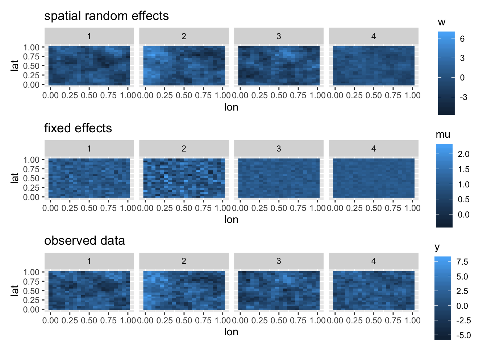
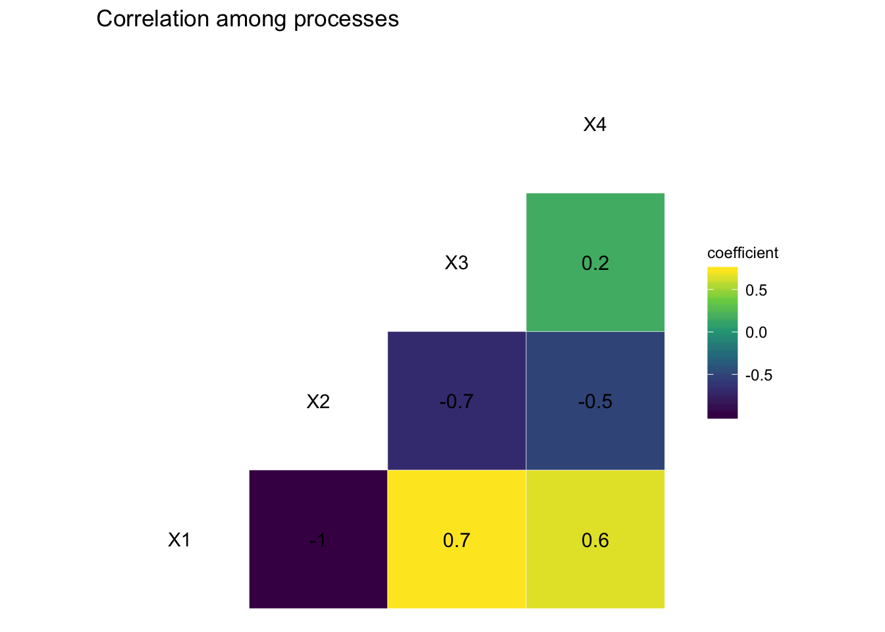
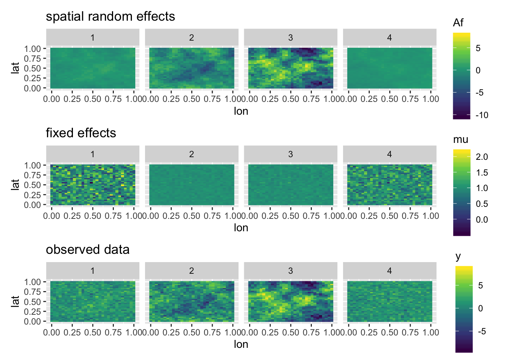
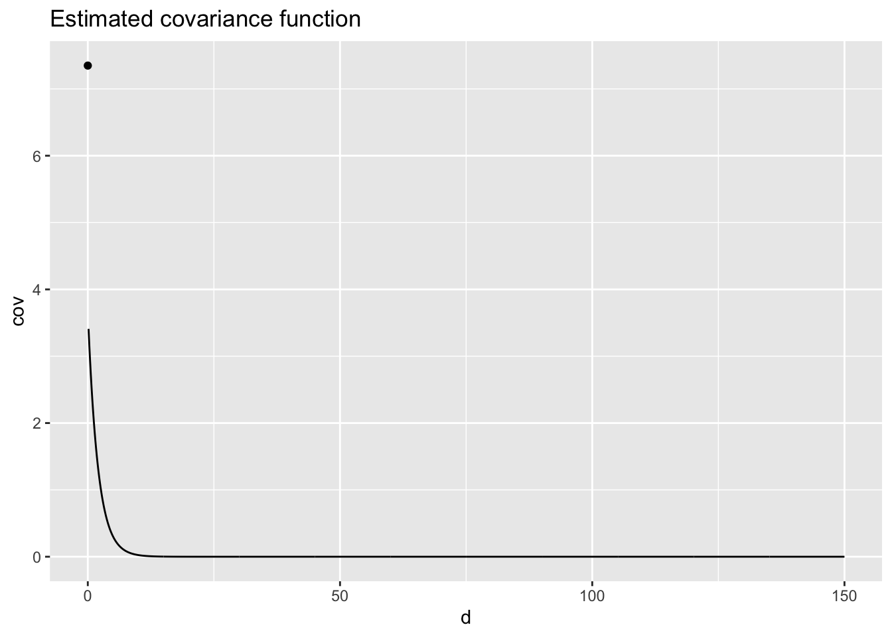
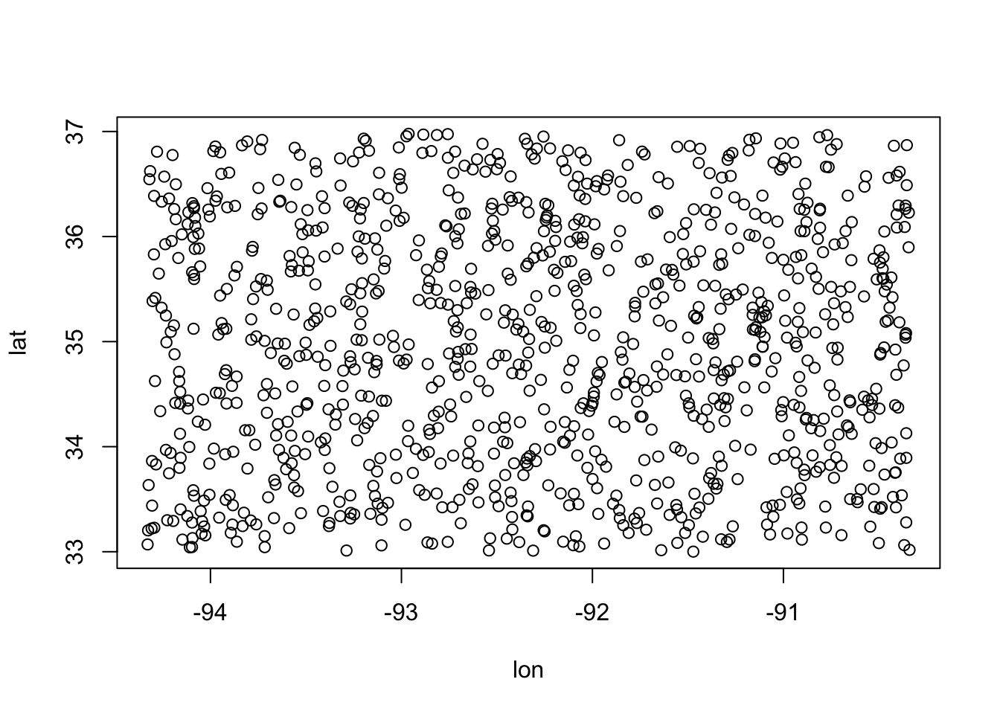
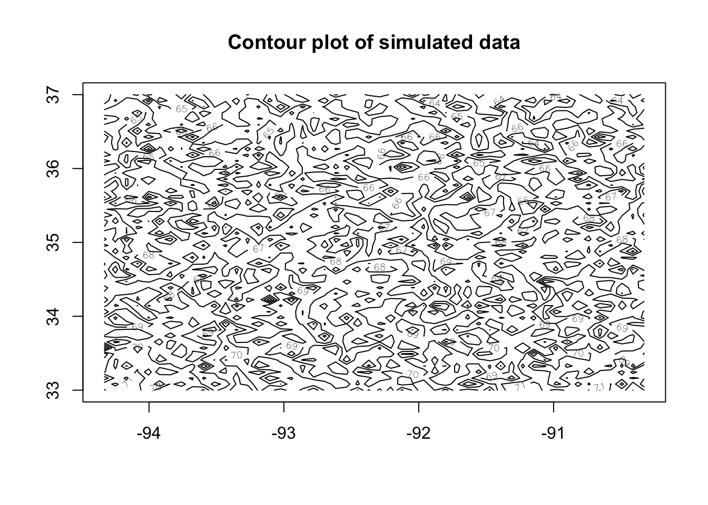
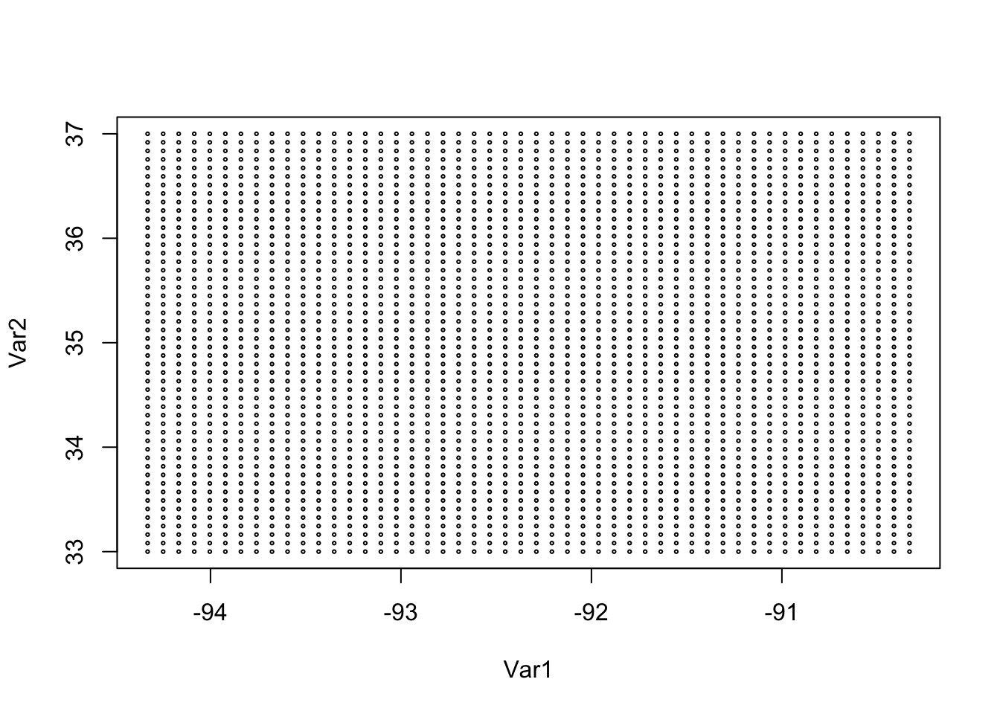
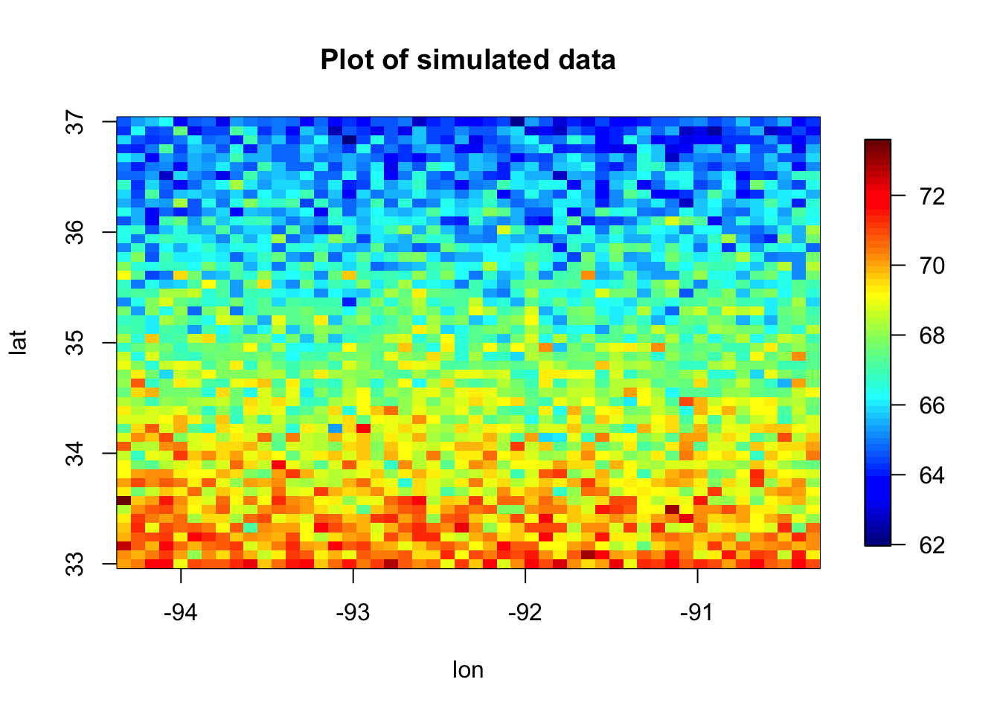
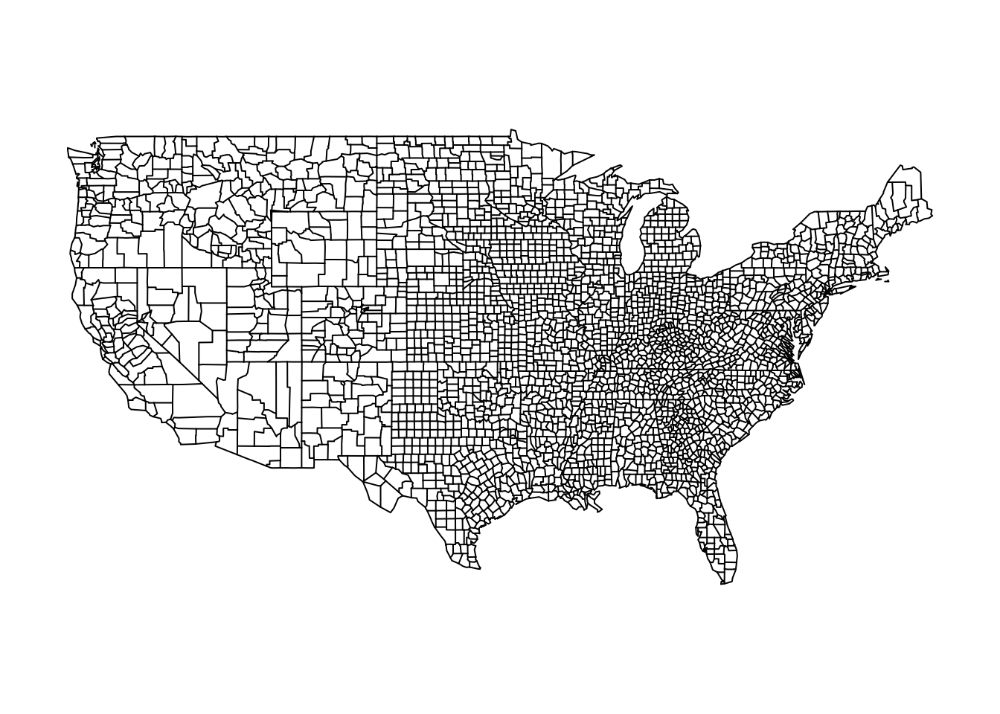
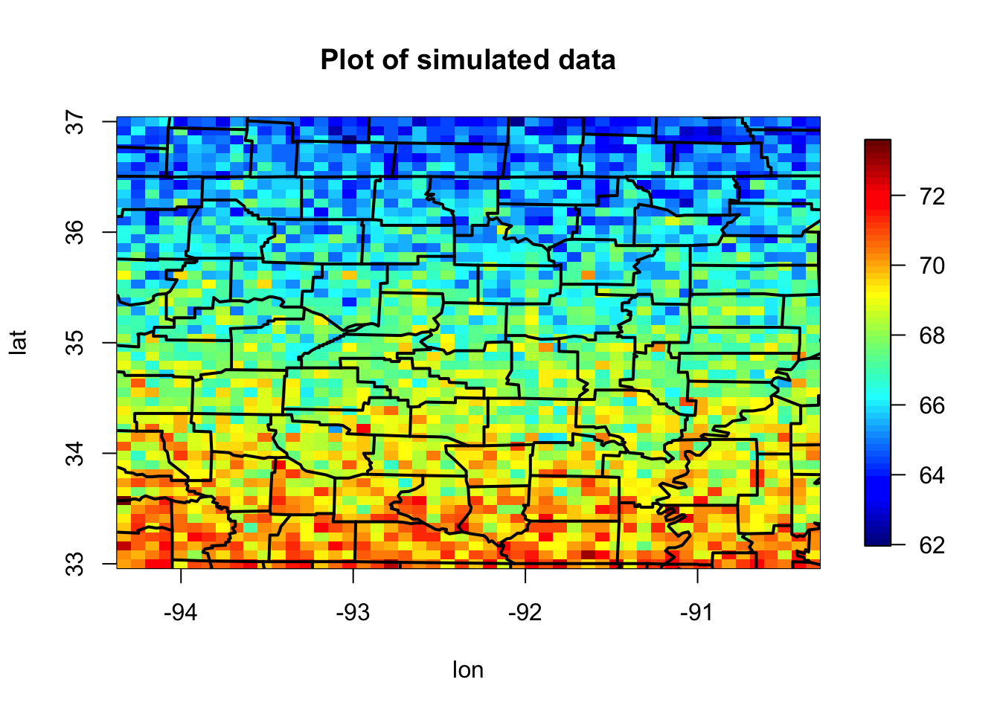

2 Day 2
2.1 Spatial Data
All data occur at some location is space and time. For know we focus on spatial analyses and will later extend this to spatio-temporal analyses. Let \(\mathcal{D}\) represent the spatial domain and let \(\mathbf{s}\) be a spatial location. In general, we will let \(\mathcal{A} \subset \mathcal{D}\) be a subdomain of the spatial region of \(\mathbf{D}\).
Insert Diagram from class here
2.2 Types of spatial data
There are three primary types of spatial data that we are going to consider
2.2.1 Geostatistical data
- Occur everywhere
- continuous support
- examples: temperature, precipitation
## Observations: 730,486
## Variables: 10
## $ julian <int> 726834, 726835, 726836, 726837, 726838, 726839, 726840, 726841…
## $ year <int> 1990, 1990, 1990, 1990, 1990, 1990, 1990, 1990, 1990, 1990, 19…
## $ month <int> 1, 1, 1, 1, 1, 1, 1, 1, 1, 1, 1, 1, 1, 1, 1, 1, 1, 1, 1, 1, 1,…
## $ day <int> 1, 2, 3, 4, 5, 6, 7, 8, 9, 10, 11, 12, 13, 14, 15, 16, 17, 18,…
## $ id <dbl> 3804, 3804, 3804, 3804, 3804, 3804, 3804, 3804, 3804, 3804, 38…
## $ z <dbl> 35, 42, 49, 59, 41, 45, 46, 42, 54, 43, 52, 38, 32, 43, 53, 55…
## $ proc <chr> "Tmax", "Tmax", "Tmax", "Tmax", "Tmax", "Tmax", "Tmax", "Tmax"…
## $ lat <dbl> 39.35, 39.35, 39.35, 39.35, 39.35, 39.35, 39.35, 39.35, 39.35,…
## $ lon <dbl> -81.43333, -81.43333, -81.43333, -81.43333, -81.43333, -81.433…
## $ date <date> 1990-01-01, 1990-01-02, 1990-01-03, 1990-01-04, 1990-01-05, 1…## Only plot the states with data
states <- map_data("state")
states <- states %>%
subset(!(region %in% c("washington", "oregon", "california", "nevada", "idaho", "utah", "arizona","montana", "wyoming", "colorado", "new mexico")))
## generate map
NOAA_df_1990 %>%
subset(year == 1990 & day == 1 & proc == "Tmax") %>%
ggplot(aes(x = lon, y = lat, color = z)) +
geom_point() +
facet_wrap(~ month, scales = "free", nrow = 4) +
geom_polygon(data = states, aes(x = long, y = lat, group = group),
inherit.aes = FALSE, fill = NA, color = "black") +
scale_color_viridis_c(option = "inferno") +
ggtitle("Tmax for the first day of each month in 1990")
2.2.2 Areal data
- Occur only over discrete areas
- can be thought of as an integral of a continuous process over a subdomain \(\mathcal{A} \in \mathcal{D}\)
- examples: cases of a disease by counties, votes in an election by congressional district
## Observations: 116
## Variables: 5
## $ Description <chr> "Per capita personal income (dollars)", "Per capita perso…
## $ NAME10 <fct> "Adair, MO", "Andrew, MO", "Atchison, MO", "Audrain, MO",…
## $ X1970 <int> 2723, 3577, 3770, 3678, 3021, 2832, 3263, 2508, 2147, 349…
## $ X1980 <int> 7399, 7937, 5743, 8356, 7210, 7445, 8596, 6125, 5431, 923…
## $ X1990 <int> 12755, 15059, 14748, 15198, 12873, 13530, 13195, 11854, 1…## Observations: 214,279
## Variables: 53
## $ long <dbl> 627911.9, 627921.4, 627923.0, 627947.8, 627956.5, 627994.8…
## $ lat <dbl> 4473554, 4473559, 4473560, 4473577, 4473583, 4473612, 4473…
## $ order <int> 1, 2, 3, 4, 5, 6, 7, 8, 9, 10, 11, 12, 13, 14, 15, 16, 17,…
## $ hole <lgl> FALSE, FALSE, FALSE, FALSE, FALSE, FALSE, FALSE, FALSE, FA…
## $ piece <fct> 1, 1, 1, 1, 1, 1, 1, 1, 1, 1, 1, 1, 1, 1, 1, 1, 1, 1, 1, 1…
## $ id <chr> "0", "0", "0", "0", "0", "0", "0", "0", "0", "0", "0", "0"…
## $ group <fct> 0.1, 0.1, 0.1, 0.1, 0.1, 0.1, 0.1, 0.1, 0.1, 0.1, 0.1, 0.1…
## $ STATEFP10 <fct> 29, 29, 29, 29, 29, 29, 29, 29, 29, 29, 29, 29, 29, 29, 29…
## $ COUNTYFP10 <fct> 045, 045, 045, 045, 045, 045, 045, 045, 045, 045, 045, 045…
## $ COUNTYNS10 <fct> 00758477, 00758477, 00758477, 00758477, 00758477, 00758477…
## $ GEOID10 <fct> 29045, 29045, 29045, 29045, 29045, 29045, 29045, 29045, 29…
## $ NAME10 <fct> "Clark, MO", "Clark, MO", "Clark, MO", "Clark, MO", "Clark…
## $ NAMELSAD10 <fct> Clark County, Clark County, Clark County, Clark County, Cl…
## $ LSAD10 <fct> 06, 06, 06, 06, 06, 06, 06, 06, 06, 06, 06, 06, 06, 06, 06…
## $ CLASSFP10 <fct> H1, H1, H1, H1, H1, H1, H1, H1, H1, H1, H1, H1, H1, H1, H1…
## $ MTFCC10 <fct> G4020, G4020, G4020, G4020, G4020, G4020, G4020, G4020, G4…
## $ CSAFP10 <fct> NA, NA, NA, NA, NA, NA, NA, NA, NA, NA, NA, NA, NA, NA, NA…
## $ CBSAFP10 <fct> 22800, 22800, 22800, 22800, 22800, 22800, 22800, 22800, 22…
## $ METDIVFP10 <fct> NA, NA, NA, NA, NA, NA, NA, NA, NA, NA, NA, NA, NA, NA, NA…
## $ FUNCSTAT10 <fct> A, A, A, A, A, A, A, A, A, A, A, A, A, A, A, A, A, A, A, A…
## $ ALAND10 <dbl> 1307146971, 1307146971, 1307146971, 1307146971, 1307146971…
## $ AWATER10 <dbl> 18473547, 18473547, 18473547, 18473547, 18473547, 18473547…
## $ INTPTLAT10 <fct> +40.4072748, +40.4072748, +40.4072748, +40.4072748, +40.40…
## $ INTPTLON10 <fct> -091.7294720, -091.7294720, -091.7294720, -091.7294720, -0…
## $ AREA <dbl> 1324937990, 1324937990, 1324937990, 1324937990, 1324937990…
## $ PERIMETER <dbl> 161503.6, 161503.6, 161503.6, 161503.6, 161503.6, 161503.6…
## $ COUNTY10_ <int> 2, 2, 2, 2, 2, 2, 2, 2, 2, 2, 2, 2, 2, 2, 2, 2, 2, 2, 2, 2…
## $ COUNTY10_I <int> 115, 115, 115, 115, 115, 115, 115, 115, 115, 115, 115, 115…
## $ POP90 <int> 7547, 7547, 7547, 7547, 7547, 7547, 7547, 7547, 7547, 7547…
## $ WHITE90 <int> 7528, 7528, 7528, 7528, 7528, 7528, 7528, 7528, 7528, 7528…
## $ BLACK90 <int> 3, 3, 3, 3, 3, 3, 3, 3, 3, 3, 3, 3, 3, 3, 3, 3, 3, 3, 3, 3…
## $ ASIANPI90 <int> 4, 4, 4, 4, 4, 4, 4, 4, 4, 4, 4, 4, 4, 4, 4, 4, 4, 4, 4, 4…
## $ AMIND90 <int> 7, 7, 7, 7, 7, 7, 7, 7, 7, 7, 7, 7, 7, 7, 7, 7, 7, 7, 7, 7…
## $ OTHER90 <int> 5, 5, 5, 5, 5, 5, 5, 5, 5, 5, 5, 5, 5, 5, 5, 5, 5, 5, 5, 5…
## $ HISP90 <int> 26, 26, 26, 26, 26, 26, 26, 26, 26, 26, 26, 26, 26, 26, 26…
## $ POP00 <int> 7416, 7416, 7416, 7416, 7416, 7416, 7416, 7416, 7416, 7416…
## $ WHITE00 <int> 7329, 7329, 7329, 7329, 7329, 7329, 7329, 7329, 7329, 7329…
## $ BLACK00 <int> 5, 5, 5, 5, 5, 5, 5, 5, 5, 5, 5, 5, 5, 5, 5, 5, 5, 5, 5, 5…
## $ ASIAN00 <int> 5, 5, 5, 5, 5, 5, 5, 5, 5, 5, 5, 5, 5, 5, 5, 5, 5, 5, 5, 5…
## $ AMIND00 <int> 15, 15, 15, 15, 15, 15, 15, 15, 15, 15, 15, 15, 15, 15, 15…
## $ HAWNPI00 <int> 1, 1, 1, 1, 1, 1, 1, 1, 1, 1, 1, 1, 1, 1, 1, 1, 1, 1, 1, 1…
## $ OTHER00 <int> 16, 16, 16, 16, 16, 16, 16, 16, 16, 16, 16, 16, 16, 16, 16…
## $ MULTRA00 <int> 45, 45, 45, 45, 45, 45, 45, 45, 45, 45, 45, 45, 45, 45, 45…
## $ HISP00 <int> 52, 52, 52, 52, 52, 52, 52, 52, 52, 52, 52, 52, 52, 52, 52…
## $ POP10 <int> 7139, 7139, 7139, 7139, 7139, 7139, 7139, 7139, 7139, 7139…
## $ WHITE10 <int> 7011, 7011, 7011, 7011, 7011, 7011, 7011, 7011, 7011, 7011…
## $ BLACK10 <int> 19, 19, 19, 19, 19, 19, 19, 19, 19, 19, 19, 19, 19, 19, 19…
## $ ASIAN10 <int> 23, 23, 23, 23, 23, 23, 23, 23, 23, 23, 23, 23, 23, 23, 23…
## $ AMIND10 <int> 9, 9, 9, 9, 9, 9, 9, 9, 9, 9, 9, 9, 9, 9, 9, 9, 9, 9, 9, 9…
## $ HAWNPI10 <int> 0, 0, 0, 0, 0, 0, 0, 0, 0, 0, 0, 0, 0, 0, 0, 0, 0, 0, 0, 0…
## $ OTHER10 <int> 5, 5, 5, 5, 5, 5, 5, 5, 5, 5, 5, 5, 5, 5, 5, 5, 5, 5, 5, 5…
## $ MULTRA10 <int> 72, 72, 72, 72, 72, 72, 72, 72, 72, 72, 72, 72, 72, 72, 72…
## $ HISP10 <int> 42, 42, 42, 42, 42, 42, 42, 42, 42, 42, 42, 42, 42, 42, 42…ggplot(MOcounties) +
geom_polygon(aes(x = long,
y = lat, # county boundary
group = NAME10, # county group
fill = log(X1970))) + # log of income
geom_path(aes(x = long, y = lat, group = NAME10)) +
scale_fill_viridis_c(limits = c(7.5, 10.2), option = "plasma", name = "log($)") +
coord_fixed() +
ggtitle("1970") +
xlab("x (m)") +
ylab("y (m)") +
theme_bw()
2.2.3 Point process data
- The count and location of the data are random
- examples: tornados, lightning strikes
# uncomment out this line to download the data
# load(url("http://github.com/mgimond/Spatial/raw/master/Data/ppa.RData"))
# save(starbucks, ma, pop, file = here::here("data", "ppa-starbucks.RData"))
load(here::here("data", "ppa-starbucks.RData"))
glimpse(starbucks)## List of 5
## $ window :List of 4
## ..$ type : chr "rectangle"
## ..$ xrange: num [1:2] 648032 917741
## ..$ yrange: num [1:2] 4609785 4748107
## ..$ units :List of 3
## .. ..$ singular : chr "unit"
## .. ..$ plural : chr "units"
## .. ..$ multiplier: num 1
## .. ..- attr(*, "class")= chr "unitname"
## ..- attr(*, "class")= chr "owin"
## $ n : int 171
## $ x : num [1:171] 917741 911147 902987 876188 875868 ...
## $ y : num [1:171] 4637151 4628510 4628982 4616741 4616719 ...
## $ markformat: chr "none"
## - attr(*, "class")= chr "ppp"## Loading required package: spatstat.data## Loading required package: nlme##
## Attaching package: 'nlme'## The following object is masked from 'package:dplyr':
##
## collapse## Loading required package: rpart## Registered S3 method overwritten by 'spatstat':
## method from
## print.boxx cli##
## spatstat 1.62-2 (nickname: 'Shape-shifting lizard')
## For an introduction to spatstat, type 'beginner'## add the massachusetts polygon
Window(starbucks) <- ma
marks(starbucks) <- NULL
## plot using the plot function from spatstat
plot(starbucks)
Many different file types for spatial data
- Typically data are in “flat files” like comma-seperated value (CSV) files
- “shapefiles” which can be read using rgdal or maptools packages
- “NetCDF” files cane be read using ncdf4 or RNetCDF
2.3 Textbook package
To install the data from the textbook, go to https://spacetimewithr.org/ and follow the link to the code.
Note that this package is relatively large because it contains a decent amount of spatial data.
##
## Attaching package: 'STRbook'## The following object is masked _by_ '.GlobalEnv':
##
## MOcounties2.4 Spatial Visualization
2.4.1 Spatial visualization using fields
- Simulate a process with some random locations
## Loading required package: spam## Loading required package: dotCall64## Loading required package: grid## Spam version 2.5-1 (2019-12-12) is loaded.
## Type 'help( Spam)' or 'demo( spam)' for a short introduction
## and overview of this package.
## Help for individual functions is also obtained by adding the
## suffix '.spam' to the function name, e.g. 'help( chol.spam)'.##
## Attaching package: 'spam'## The following objects are masked from 'package:base':
##
## backsolve, forwardsolve## Loading required package: maps##
## Attaching package: 'maps'## The following object is masked from 'package:purrr':
##
## map## See https://github.com/NCAR/Fields for
## an extensive vignette, other supplements and source codelon_lat_center <- c(-92.33, 35.00)
n <- 1000
## simulate some random locations
lon <- runif(n, lon_lat_center[1] - 2, lon_lat_center[1] + 2)
lat <- runif(n, lon_lat_center[2] - 2, lon_lat_center[2] + 2)
y <- rnorm(n, lat + lon, .1)
plot(lon, lat)


- Simulate a process on a regular grid
n <- 50^2
## simulate locations on a grid
lon <- seq(lon_lat_center[1] - 2, lon_lat_center[1] + 2, length = sqrt(n))
lat <- seq(lon_lat_center[2] - 2, lon_lat_center[2] + 2, length = sqrt(n))
s <- expand.grid(lon, lat)
head(lon)## [1] -94.33000 -94.24837 -94.16673 -94.08510 -94.00347 -93.92184## [1] 33.00000 33.08163 33.16327 33.24490 33.32653 33.40816## Var1 Var2
## 1 -94.33000 33
## 2 -94.24837 33
## 3 -94.16673 33
## 4 -94.08510 33
## 5 -94.00347 33
## 6 -93.92184 33
## simulate some fake data with a north/south trend
y <- 120 - 1.5 * s[, 2] + matrix(rnorm(n), sqrt(n), sqrt(n))
image.plot(lon, lat, y, main = "Plot of simulated data")

image.plot(lon, lat, y, main = "Plot of simulated data")
contour(lon, lat, y, main = "Contour plot of simulated data", add = TRUE,
nlevels = 10)


## [1] "texas" "texas" "texas" "texas" "louisiana" "louisiana"## state
## arkansas louisiana mississippi missouri texas
## 1903 34 180 351 32## subset only points in arkansas
dat <- data.frame(
lon = s[, 1],
lat = s[, 2],
state = state
)
maps::map("county", "Arkansas")
dat %>%
subset(state == "arkansas") %>%
points(cex = 0.3)
Plot the simulated data with the county boundaries

## change the aspect ratio
image.plot(lon, lat, y, main = "Plot of simulated data", asp = 1.3)
maps::map("county", add = TRUE, lwd = 2)
2.4.2 In Class Activity:
From Lab 2.1 on the textbook site
## Wikle, C. K., Zammit-Mangion, A., and Cressie, N. (2019),
## Spatio-Temporal Statistics with R, Boca Raton, FL: Chapman & Hall/CRC
## Copyright (c) 2019 Wikle, Zammit-Mangion, Cressie
##
## This program is free software; you can redistribute it and/or
## modify it under the terms of the GNU General Public License
## as published by the Free Software Foundation; either version 2
## of the License, or (at your option) any later version.
##
## This program is distributed in the hope that it will be useful,
## but WITHOUT ANY WARRANTY; without even the implied warranty of
## MERCHANTABILITY or FITNESS FOR A PARTICULAR PURPOSE. See the
## GNU General Public License for more details.
library("dplyr")
library("tidyr")
library("STRbook")
## ------------------------------------------------------------------------
locs <- read.table(system.file("extdata", "Stationinfo.dat",
package = "STRbook"),
col.names = c("id", "lat", "lon"))
Times <- read.table(system.file("extdata", "Times_1990.dat",
package = "STRbook"),
col.names = c("julian", "year", "month", "day"))
Tmax <- read.table(system.file("extdata", "Tmax_1990.dat",
package = "STRbook"))
## ------------------------------------------------------------------------
names(Tmax) <- locs$id
## ------------------------------------------------------------------------
Tmax <- cbind(Times, Tmax)
head(names(Tmax), 10)
## ------------------------------------------------------------------------
Tmax_long <- gather(Tmax, id, z, -julian, -year, -month, -day)
head(Tmax_long)
## ------------------------------------------------------------------------
Tmax_long$id <- as.integer(Tmax_long$id)
## -----------------------------------------------------------
nrow(Tmax_long)
Tmax_long <- filter(Tmax_long, !(z <= -9998))
nrow(Tmax_long)
## ------------------------------------------------------------------------
Tmax_long <- mutate(Tmax_long, proc = "Tmax")
head(Tmax_long)
## ------------------------------------------------------------------------
data(Tmin_long, package = "STRbook")
data(TDP_long, package = "STRbook")
data(Precip_long, package = "STRbook")
## ------------------------------------------------------------------------
NOAA_df_1990 <- rbind(Tmax_long, Tmin_long, TDP_long, Precip_long)
## ------------------------------------------------------------------------
summ <- group_by(NOAA_df_1990, year, proc) %>% # groupings
summarise(mean_proc = mean(z)) # operation
## ------------------------------------------------------------------------
NOAA_precip <- filter(NOAA_df_1990, proc == "Precip" & month == 6)
summ <- group_by(NOAA_precip, year, id) %>%
summarise(days_no_precip = sum(z == 0))
head(summ)
## ------------------------------------------------------------------------
median(summ$days_no_precip)
## -------------------------------------------------------------
grps <- group_by(NOAA_precip, year, id)
summ <- summarise(grps, days_no_precip = sum(z == 0))
## ------------------------------------------------------------------------
NOAA_df_sorted <- arrange(NOAA_df_1990, julian, id)
## ------------------------------------------------------------------------
df1 <- select(NOAA_df_1990, julian, z)
df2 <- select(NOAA_df_1990, -julian)
## ------------------------------------------------------------------------
NOAA_df_1990 <- left_join(NOAA_df_1990, locs, by = "id")
## ------------------------------------------------------------------------
Tmax_long_sel <- select(Tmax_long, julian, id, z)
Tmax_wide <- spread(Tmax_long_sel, id, z)
dim(Tmax_wide)
## ------------------------------------------------------------------------
M <- select(Tmax_wide, -julian) %>% as.matrix()
## -----------------------------------------------------------
library("sp")
library("spacetime")
## ------------------------------------------------------------------------
NOAA_df_1990$date <- with(NOAA_df_1990,
paste(year, month, day, sep = "-"))
head(NOAA_df_1990$date, 4) # show first four elements
## ------------------------------------------------------------------------
NOAA_df_1990$date <- as.Date(NOAA_df_1990$date)
class(NOAA_df_1990$date)
## ------------------------------------------------------------------------
Tmax_long2 <- filter(NOAA_df_1990, proc == "Tmax")
STObj <- stConstruct(x = Tmax_long2, # data set
space = c("lon", "lat"), # spatial fields
time = "date") # time field
class(STObj)
## ------------------------------------------------------------------------
spat_part <- SpatialPoints(coords = Tmax_long2[, c("lon", "lat")])
temp_part <- Tmax_long2$date
STObj2 <- STIDF(sp = spat_part,
time = temp_part,
data = select(Tmax_long2, -date, -lon, -lat))
class(STObj2)
## ------------------------------------------------------------------------
spat_part <- SpatialPoints(coords = locs[, c("lon", "lat")])
temp_part <- with(Times,
paste(year, month, day, sep = "-"))
temp_part <- as.Date(temp_part)
## ------------------------------------------------------------------------
Tmax_long3 <- gather(Tmax, id, z, -julian, -year, -month, -day)
## ------------------------------------------------------------------------
Tmax_long3$id <- as.integer(Tmax_long3$id)
Tmax_long3 <- arrange(Tmax_long3,julian,id)
## ------------------------------------------------------------------------
all(unique(Tmax_long3$id) == locs$id)
## ------------------------------------------------------------------------
STObj3 <- STFDF(sp = spat_part,
time = temp_part,
data = Tmax_long3)
class(STObj3)
## ------------------------------------------------------------------------
proj4string(STObj3) <- CRS("+proj=longlat +ellps=WGS84")
## ------------------------------------------------------------------------
STObj3$z[STObj3$z == -9999] <- NA